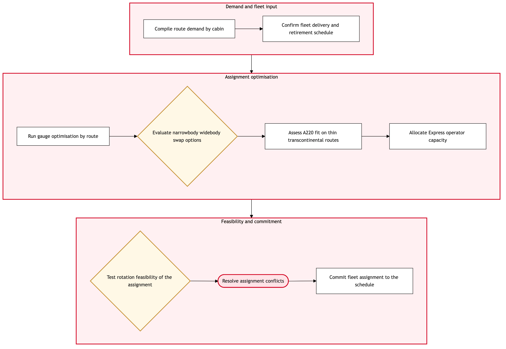

Updated 2026-08-20
Fleet Assignment Optimisation by Demand
Process flow
Click to zoom

Process steps
▼
Phase 1 — Demand Analysis
3 steps
| Step | Activity | Role | System | Input | Output | KPI | Dec | Exc | Pain point |
|---|---|---|---|---|---|---|---|---|---|
| 1.1 | Receive demand forecast | Revenue Management Analyst | Lufthansa Systems NetLineB | Weekly revenue forecast data | Demand analysis report | 0% error in demand forecasting | N | N | Inaccurate forecasts can lead to over or under-provisioning of aircraft. |
| 1.2 | Identify peak travel days | Network Planning Analyst | Lufthansa Systems NetLine/PlanU | Demand analysis report | Peak travel day list | 95% accuracy in identifying peak demand days | N | N | Missing a peak travel day can result in insufficient capacity, leading to passenger dissatisfaction. |
| 1.3 | Determine aircraft requirements for peaks | Network Planning Analyst | Lufthansa Systems NetLine/PlanU | Peak travel day list | Aircraft requirement report | 100% aircraft coverage on peak days | Y | N | Insufficient aircraft can lead to delays and cancellations. |
▼
Phase 2 — Fleet Assignment Build
3 steps
| Step | Activity | Role | System | Input | Output | KPI | Dec | Exc | Pain point |
|---|---|---|---|---|---|---|---|---|---|
| 2.1 | Build initial fleet assignment schedule | Fleet Assignment Specialist | Lufthansa Systems NetLine/PlanU | Aircraft requirement report | Initial fleet assignment draft | 90% adherence to demand forecast | N | Y | Infeasible schedules due to operational constraints. |
| 2.2 | Review schedule for regulatory compliance | Regulatory Compliance Officer | Lufthansa Systems NetLine/PlanU | Initial fleet assignment draft | Compliance report | 100% compliance with aviation regulations | Y | N | Non-compliance can lead to fines and operational disruptions. |
| 2.3 | Adjust schedule for compliance | Regulatory Compliance Officer | Lufthansa Systems NetLine/PlanU | Compliance report | Adjusted fleet assignment draft | 95% adherence to demand forecast after adjustments | N | Y | Further adjustments may lead to additional delays. |
▼
Phase 3 — Capacity Check
2 steps
| Step | Activity | Role | System | Input | Output | KPI | Dec | Exc | Pain point |
|---|---|---|---|---|---|---|---|---|---|
| 3.1 | Conduct capacity check with A++ JV | A++ Atlantic Joint Venture Coordinator | A++ Atlantic Joint Venture (A++ JV)U | Adjusted fleet assignment draft | Capacity approval status | 90% of joint decisions within 24 hours | Y | N | Delays in capacity approvals can impact flight schedules. |
| 3.2 | Finalize fleet assignment with A++ JV approval | Fleet Assignment Specialist | Lufthansa Systems NetLine/PlanU | Capacity approval status | Finalized fleet assignment schedule | 100% final schedule deployment within 48 hours | N | Y | Further delays in approvals can cause operational chaos. |
▼
Phase 4 — Rotation Planning
3 steps
| Step | Activity | Role | System | Input | Output | KPI | Dec | Exc | Pain point |
|---|---|---|---|---|---|---|---|---|---|
| 4.1 | Develop rotation plan for aircraft | Fleet Rotation Specialist | Lufthansa Systems NetLine/PlanU | Finalized fleet assignment schedule | Rotation plan draft | 95% efficiency in aircraft utilization | N | Y | Inefficient rotations can lead to higher maintenance costs. |
| 4.2 | Review rotation plan for operational feasibility | Operations Control Duty Manager | Lufthansa Systems NetLine/PlanU | Rotation plan draft | Operational feasibility report | 85% operational feasibility without adjustments | Y | N | Infeasible rotations can lead to increased downtime. |
| 4.3 | Adjust rotation plan for feasibility | Operations Control Duty Manager | Lufthansa Systems NetLine/PlanU | Operational feasibility report | Adjusted rotation plan draft | 90% efficiency in aircraft utilization after adjustments | N | Y | Further adjustments may lead to additional delays. |
▼
Phase 5 — Validation & Adjustment
2 steps
| Step | Activity | Role | System | Input | Output | KPI | Dec | Exc | Pain point |
|---|---|---|---|---|---|---|---|---|---|
| 5.1 | Validate final schedule against historical data | Network Planning Analyst | Lufthansa Systems NetLine/PlanU | Adjusted rotation plan draft | Validation report | 90% accuracy in validation against past performance | Y | N | Inaccurate validations can lead to over-provisioning. |
| 5.2 | Adjust final schedule based on validation | Network Planning Analyst | Lufthansa Systems NetLine/PlanU | Validation report | Final validated fleet assignment schedule | 95% accuracy in aligning with demand forecast | N | Y | Additional adjustments may lead to further delays. |
▼
Phase 6 — Deployment
3 steps
| Step | Activity | Role | System | Input | Output | KPI | Dec | Exc | Pain point |
|---|---|---|---|---|---|---|---|---|---|
| 6.1 | Deploy final schedule to operations control | Operations Control Duty Manager | Lufthansa Systems NetLine/PlanU | Final validated fleet assignment schedule | Deployed schedule in operations control system | 98% successful deployment rate | N | Y | Failed deployments can lead to operational disruptions. |
| 6.2 | Monitor deployed schedule for compliance and performance | Operations Control Duty Manager | Lufthansa Systems NetLine/PlanU | Deployed schedule in operations control system | Compliance and performance monitoring report | 95% compliance and performance within acceptable limits | Y | N | Non-compliance can lead to operational issues. |
| 6.3 | Adjust deployed schedule as needed based on monitoring | Operations Control Duty Manager | Lufthansa Systems NetLine/PlanU | Compliance and performance monitoring report | Adjusted deployed schedule | 90% efficiency in handling adjustments | N | Y | Adjustments during operations can lead to delays. |
Swim lanes
Revenue Management Analyst1.1
Network Planning Analyst1.2 1.3 5.1 5.2
Fleet Assignment Specialist2.1 3.2
Regulatory Compliance Officer2.2 2.3
A++ Atlantic Joint Venture Coordinator3.1
Fleet Rotation Specialist4.1
Operations Control Duty Manager4.2 4.3 6.1 6.2 6.3
Systems touched
Lufthansa Systems NetLineBLufthansa Systems NetLine/PlanUA++ Atlantic Joint Venture (A++ JV)U
Key performance indicators
- 95% adherence to demand forecast
- 100% compliance with aviation regulations
- 90% of joint decisions within 24 hours
- 100% final schedule deployment within 48 hours
- 95% efficiency in aircraft utilization
Risks and control points
- Inaccurate demand forecasting leading to over or under-provisioning
- Non-compliance with aviation regulations causing fines and disruptions
- Delays in capacity approvals from A++ JV impacting flight schedules
- Further adjustments after initial rotations increasing maintenance costs
- Failed deployments to operations control causing operational disruptions
Air Canada Process Wiki — process and systems reference compiled from public sources
for IT Application Management and User Support pre-sales discovery.
Built 2026-08-21. Every system carries an evidence tier: tier C is an industry pattern and tier U is an open
question, and neither should be asserted as fact about Air Canada without confirmation in discovery.
Not affiliated with or endorsed by Air Canada. Air Canada, Aeroplan and Altitude are trademarks of Air Canada.